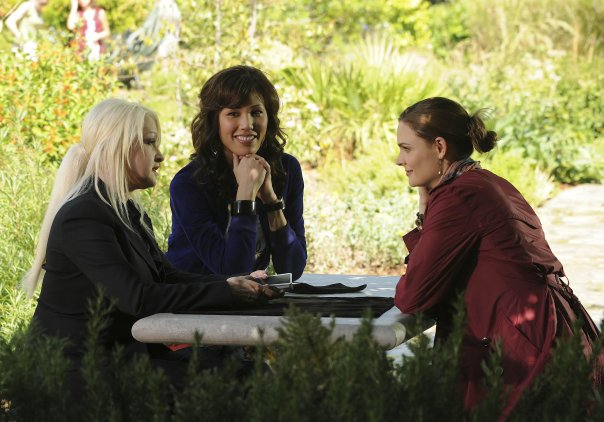

Bones si è affermata come una delle serie crime più riconoscibili e longeve del panorama televisivo contemporaneo grazie a un equilibrio particolarmente riuscito tra rigore della scienza forense, tensione narrativa e un cast di personaggi capaci di evolvere in modo credibile stagione dopo stagione. Il mondo del Jeffersonian, con i suoi casi complessi, le sue dinamiche interne e i suoi antagonisti iconici, continua a esercitare un fascino duraturo, trasformando ogni indagine in un racconto che intreccia logica investigativa, coinvolgimento emotivo e una profonda attenzione alla dimensione umana dei protagonisti.
“Un procedurale che non si limita al caso della settimana, ma scava nelle relazioni e nelle fragilità dei suoi protagonisti.” — The Hollywood Reporter
Questa raccolta esplora proprio ciò che rende Bones così distintiva nel panorama dei crime drama: avversari psicologicamente stratificati, capaci di mettere in crisi non solo le competenze scientifiche del team, ma anche le certezze personali di Brennan e Booth; dinamiche morali complesse; e una progressiva maturazione narrativa che accompagna lo spettatore nel corso delle stagioni. È attraverso questi elementi che la serie costruisce una tensione duratura, andando oltre la semplice risoluzione del caso per interrogarsi su giustizia, identità e responsabilità.
“Una serie che sorprende per la capacità di reinventarsi attraverso villain memorabili e trame ad alta tensione.” — TV Guide

Sigla
La sigla di Bones è immediatamente riconoscibile grazie al suo mix di elettronica, percussioni e sonorità “scientifiche” che richiamano l'ambiente del laboratorio del Jeffersonian. Composta dai The Crystal Method, la musica d'apertura cattura fin da subito l'atmosfera della serie: dinamica, investigativa, moderna. Le tracce utilizzate negli episodi alternano brani originali a canzoni di artisti contemporanei, spesso scelte per sottolineare momenti emotivi o transizioni narrative. L'uso di beat elettronici e ritmi sincopati contribuisce a dare alla serie un'identità sonora precisa, capace di accompagnare sia le analisi forensi sia le tensioni drammatiche tra i personaggi.

Horror
In Bones, l'elemento horror si esprime attraverso un crudo body horror, dove la rappresentazione iperrealistica della decomposizione sfida i canoni del genere procedurale. Dai rituali cannibalici di Gormogon alle installazioni macabre del Fantocciaio, la serie fonde la fredda analisi scientifica con atmosfere gotiche e disturbanti, trasformando il resto umano in un fulcro di orrore viscerale e psicologico.

Scienza ed Esoterismo in Bones
L'esoterismo in Bones emerge come un controcanto costante alla razionalità scientifica del Jeffersonian, e trova nella Massoneria, nelle visioni e nel personaggio di Avalon Harmonia (Cindy Lauper) le sue manifestazioni più riconoscibili. La serie mette spesso in dialogo — e talvolta in conflitto — la logica empirica di Brennan con dimensioni simboliche e intuitive che sfuggono alla misurazione, creando un terreno narrativo in cui il mistero non è solo criminale, ma anche culturale e psicologico. Avalon, con la sua sensibilità medianica e il suo linguaggio enigmatico, incarna questa tensione: le sue intuizioni, apparentemente irrazionali, finiscono talvolta per orientare le indagini, costringendo Brennan a confrontarsi con l'idea che non tutto ciò che è reale è immediatamente dimostrabile. Allo stesso modo, i riferimenti alla Massoneria e le allucinazioni vissute da alcuni personaggi introducono un livello simbolico che amplifica il senso di ambiguità e di profondità emotiva, suggerendo che la verità — in Bones — nasce spesso dall'incontro tra ciò che può essere provato e ciò che può solo essere percepito.
